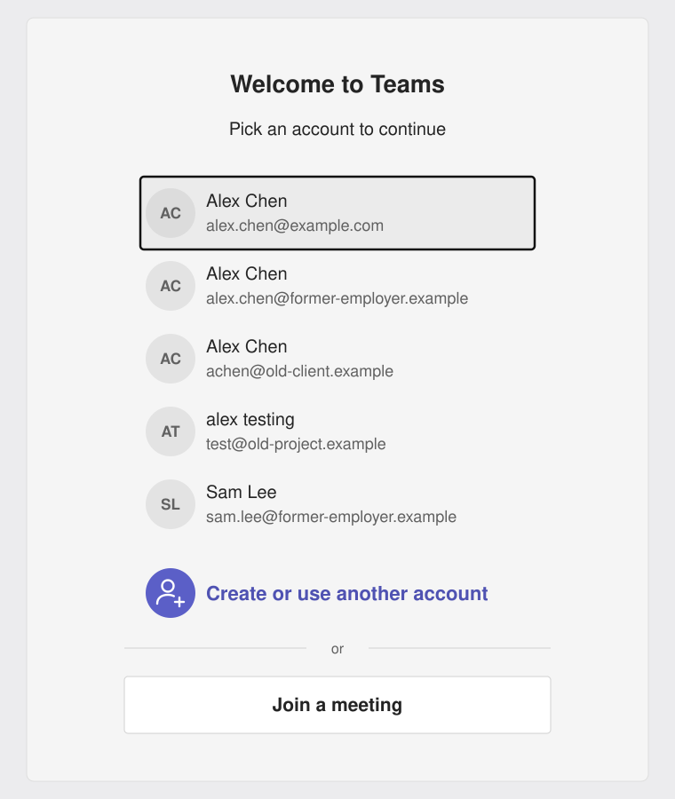
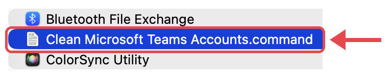

Clean Microsoft Teams Accounts
Remove old accounts from the Teams account list. Free for Mac.
Free · macOS
The problem
Teams on your Mac keeps showing accounts you no longer use, like a former employer or an old test account. Reinstalling Teams or clearing its cache does not remove them.

Illustration only. The names are placeholders.
This tool removes all of these saved accounts at once. Then you sign in again with only the account you want.
Before you start
Sign out of all your Teams accounts first.
In Teams, go to Settings › Accounts and orgs and choose Sign out for each account.
Then save your work and quit Teams, Outlook, Word, Excel, PowerPoint and OneNote.
How to use
- Click Download, then open Clean-Microsoft-Teams-Accounts-1.1.0.pkg from your Downloads folder and follow the installer.
- Sign out of Teams and quit the Microsoft apps (see above).
- Open Applications › Utilities and double-click Clean Microsoft Teams Accounts. It opens in Terminal.

- Check the list of accounts, then type yes and press Return.
- When it says Done, open Teams and sign in with only the account you want.
- When you are done, delete Clean Microsoft Teams Accounts from Applications › Utilities. You can drag it to the Trash.
Good to know
- All Microsoft accounts are removed together. You cannot pick just one.
- Teams, OneDrive, Outlook, Word, Excel, PowerPoint and OneNote need to sign in again.
- Your files, OneDrive content, Teams chats and settings are not affected.
- The tool changes your Mac keychain directly. It makes a backup first, but use it at your own risk.
Common questions
Can I see what it will remove first?
Yes. It shows the accounts and asks you to type yes before it changes anything. Type anything else to cancel.
Where is the backup?
In your home folder, named keychain-backup- with the date and time. Delete it once everything works.
The old accounts came back. Why?
A Microsoft app was still running in the background. Restart your Mac and run the tool again.
Do I need to keep it?
No. It is only a small script file. It does not run in the background and does not keep any logs. We suggest you delete it when you are done.
How do I remove it?
Drag Clean Microsoft Teams Accounts from Applications › Utilities to the Trash. This is the only file it installs.
Does it collect my data?
No. It runs only on your Mac and sends nothing to us or anyone else.
Where is the source code?
On GitHub.
Contact support
Found a problem or have an idea? Email us. If you can, tell us your Mac model and macOS version.
Before you email, check the common questions above. The answer may be there.
Not made by or connected to Microsoft. Microsoft and Teams are trademarks of Microsoft Corporation.